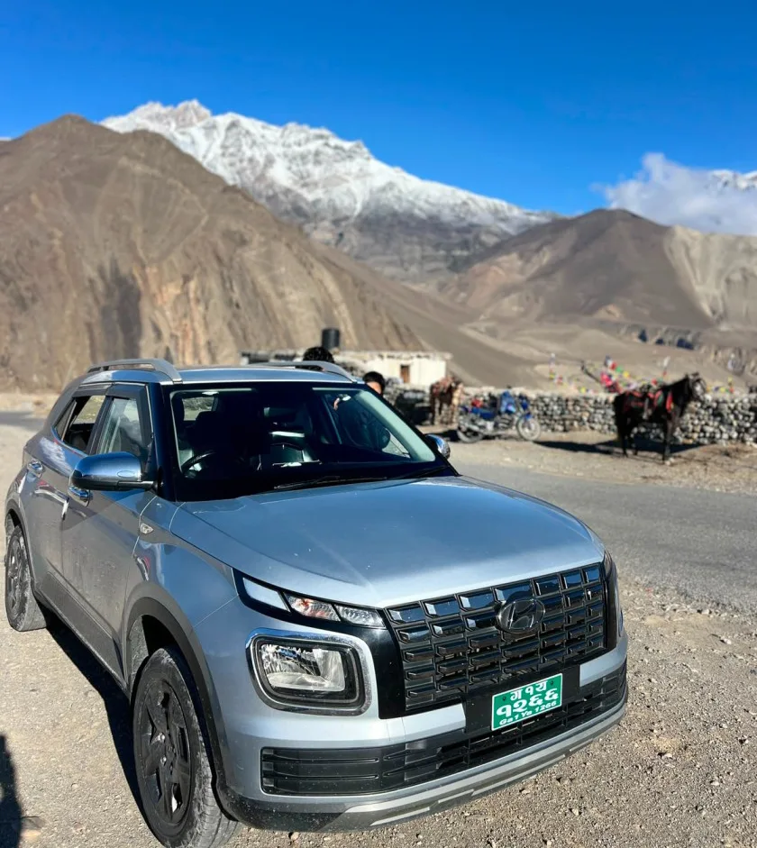
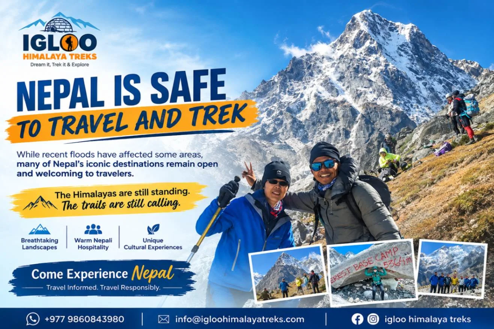
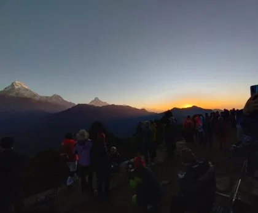

Monsoon Flooding in the Modi Khola: What Happened & Current Status
The monsoon season in the Central Himalaya delivers up to 80% of Nepal's annual precipitation between late June and early September. Periodically, intense localized cloudbursts funnel massive volumes of rainwater into the narrow, steep-walled gorge of the Modi Khola river—the sole hydrological drainage for the entire Annapurna Sanctuary amphitheater.
During recent high-intensity monsoon events, roaring river torrents and saturated hillside soils triggered localized slope slips, washed away low wooden seasonal footbridges, deposited gravel silt over riverside stone staircases, and temporarily damaged the natural thermal hot spring pools at Jhinu Danda. Sensationalized social media video clips created the false impression that the entire trekking route had been obliterated.
In reality, the Himalayan trail network is profoundly resilient. The indigenous Gurung and Magar communities of Kaski and Myagdi have coexisted with seasonal monsoon dynamics for centuries. Within weeks of the waters receding, local trail maintenance committees and ACAP rangers rebuilt stone retaining walls, carved bypass tracks around slide areas, and re-secured steel cables, ensuring that international trekking resumed seamlessly for the autumn and spring trekking seasons.
Official ACAP Trail Verification: The Annapurna Conservation Area Project (ACAP) checkposts at Birethanti, Chhomrong, and Ghandruk monitor daily trail stability. As of 2026/2027, all primary routes and bypass trails between Nayapul, Jhinu Danda, Chhomrong, and Annapurna Base Camp are officially inspected, certified safe, and fully operational.
Sector-by-Sector Trail Assessment: Nayapul to the Sanctuary Basin
To provide complete transparency for hikers planning their journeys, our senior guiding team conducted a meticulous, step-by-step audit of the entire trail corridor. Here is the verified status across every major sector:
| Trail Sector | Altitude | Flood Impact Observed | Reconstruction Status | Current Walking Condition |
|---|---|---|---|---|
| Pokhara to Matque / Siwai Road | 820m - 1,500m | Localized mudslides on unpaved road | Road cleared; bulldozers widened corners | Open for 4WD jeeps; dry and accessible. |
| Jhinu Danda to Chhomrong | 1,780m - 2,170m | Minor water-scour on lower stone steps | Steps re-leveled with native stone masonry | 100% stable; excellent condition. |
| Chhomrong to Sinuwa | 2,170m - 2,360m | Chhomrong Khola bridge approaches eroded | Suspension bridge reinforced; stairs rebuilt | Fully functional; steep stone stairs intact. |
| Sinuwa to Bamboo & Dovan | 2,360m - 2,600m | Dense bamboo slope slippage near streams | New 200m high-contour trail carved | Clear and well-trodden; completely safe. |
| Dovan to Himalaya & Deurali | 2,600m - 3,200m | Gravel silt deposited across trail slabs | Debris cleared; rock steps stabilized | Normal walking trail; watch footing on damp rock. |
| Deurali to MBC & ABC | 3,200m - 4,130m | Alpine defile undamaged; moraines intact | High-altitude sanctuary trails unaffected | Pristine conditions; classic alpine scenery. |

Suspension Bridges, Footbridges & River Crossing Restorations
The Annapurna Base Camp route relies on multiple bridges to cross the Modi Khola and its roaring mountain tributaries. The primary steel suspension bridges—most notably the monumental Jhinu Danda Suspension Bridge (one of the longest and highest pedestrian suspension bridges in Nepal at 287 meters length and 135 meters height)—suffered zero structural damage during the floods, as their engineering anchors are drilled deep into solid bedrock high above the maximum flood line.
The only infrastructure affected were temporary low-water timber bridges used by local herders in the narrow gorge between Bamboo and Dovan. These seasonal crossings have been completely replaced by elevated steel-cable suspension structures or newly engineered stone causeways that sit well clear of surging river levels.
Jhinu Danda Hot Springs & Riverside Bath Status Post-Monsoon
The natural geothermal hot springs at Jhinu Danda (1,780m) are world-famous as the ultimate post-trek reward, allowing tired hikers to soak aching quadriceps in hot mineral water while listening to the rushing Modi Khola river.
Because the original natural pools sat right on the river bank, extreme monsoon river flows inundated two of the three riverside concrete tubs with silt and river boulders. The Jhinu Hot Springs Community Management Committee took immediate action: they dredged the pools, constructed a reinforced stone gabion flood wall on the riverward side, rebuilt the changing cubicles, and restored the piping connecting the geothermal spring source to the pools. All three bathing pools are now fully reopened, immaculately maintained, and operating daily.

Teahouse Resilience: Lodge Repairs, Food Supplies & Power Restoration
Teahouses along the Annapurna Base Camp circuit are built on elevated stone spurs and natural topographical benches specifically chosen to avoid historical flash flood channels. As a result, not a single teahouse structure in Chhomrong, Sinuwa, Bamboo, Dovan, Himalaya, Deurali, MBC, or ABC suffered catastrophic structural failure.
Minor disruptions were confined to above-ground plastic water supply hoses and localized micro-hydro power generators around Bamboo and Dovan. Within days of the storms, lodge operators repaired water catchment lines and switched to backup solar arrays. Mule caravans and porters resumed daily supply runs from Matque, ensuring that dining halls are fully stocked with fresh vegetables, lentils, eggs, bakery goods, and hot beverage supplies.
Active Trail Caution: In shaded forest sectors between Sinuwa and Dovan, small streams crossing the trail can carry loose gravel after heavy rains. Always plant your trekking poles securely and avoid stepping onto slippery, wet green moss on river rocks.
Active Landslide Zones: Warning Signs, Safe Traversal & Guide Protocols
While the main trail is stabilized, understanding how to safely navigate natural mountain terrain after heavy rains is an essential wilderness skill. In steep Himalayan canyons, gravity and soil saturation can cause occasional loose rockfall (scree slide) on steep slopes.
Follow these professional guiding protocols in designated slide zones:
- Single-File Efficient Movement: When crossing a marked landslide scar or newly graded slope, do not stop to take selfies or adjust boot laces. Move steadily and deliberately in single file with 15–20 meters between hikers.
- Look and Listen Upward: Keep one ear free from headphones. If you hear a clattering sound or see dust puffs high above the trail, that is an immediate early warning of rockfall. Move quickly past the chute or take shelter beneath an overhanging rock ledge.
- Trek Early in the Morning: Slope stability is highest in the cool, early morning hours before rising ambient temperatures and wind loosen dried gravel. Complete your trail movements by early afternoon.

Post-Monsoon Weather Stabilization: Autumn & Spring Trail Windows
The monsoon officially ends in late September. As the monsoon low-pressure system withdraws toward the Bay of Bengal, the Central Himalaya enters its most stable, dry, and crystal-clear climatic window of the year.
From October through December, atmospheric moisture drops to near zero. Clear skies prevail for weeks at a time, eliminating flood risk entirely and allowing trails to dry into firm, hard-packed stone pathways. A secondary prime window runs from March through May (spring), when daytime sunshine is warm, trails are completely dry, and rhododendron forests are in full bloom.

Optimized Post-Flood Itinerary: Paced Safety with Verified Checkpoints
Our updated 8-day post-flood itinerary is designed to maximize safety, incorporate newly upgraded trail bypasses, and ensure gradual altitude acclimatization up to Annapurna Base Camp:
| Day | Route & Trail Segment | Distance | Trek Time | Altitude | Post-Flood Tactical Note |
|---|---|---|---|---|---|
| Day 01 | Drive Pokhara to Matque (3 hrs), trek to Chhomrong | 8.5 km | 4.5 - 5 hrs | 2,170 m | Jeep road fully cleared; gentle stone stairs to Chhomrong. |
| Day 02 | Chhomrong to Dovan via Sinuwa & Bamboo | 10.8 km | 5.5 - 6 hrs | 2,600 m | Cross reinforced Chhomrong bridge; follow new high-bypass above Bamboo. |
| Day 03 | Dovan to Deurali via Himalaya Hotel | 8.2 km | 4.5 - 5 hrs | 3,200 m | Pass Hinku Cave; newly paved stone steps lead steadily to Deurali. |
| Day 04 | Deurali to Machapuchare Base Camp (MBC) | 5.8 km | 3.5 - 4.5 hrs | 3,700 m | Early 7:00 AM start; open alpine defile with stable footing. |
| Day 05 | MBC to Annapurna Base Camp (ABC) sunrise exploration | 4.2 km | 2.5 - 3.5 hrs | 4,130 m | Glorious 360-degree panorama of Annapurna I, Machapuchare, and Hiunchuli. |
| Day 06 | ABC sunrise photography, descend to Bamboo | 15.0 km | 6.5 - 7 hrs | 2,310 m | Steady descent; use trekking poles to cushion knees on stone staircases. |
| Day 07 | Bamboo to Jhinu Danda (Hot Springs) | 9.0 km | 4.5 - 5 hrs | 1,780 m | Soak in newly restored, flood-protected riverside geothermal hot pools. |
| Day 08 | Jhinu Danda to Matque/Siwai, drive to Pokhara | 4.0 km | 2 hrs trek + 3 hrs drive | 820 m | Cross the iconic 287m Jhinu suspension bridge; return drive to Pokhara. |

Essential Gear for Post-Flood Trails: Gaiters, Traction & Footwear
Walking on trails that have recently undergone seasonal maintenance requires specific gear adaptations:
- Waterproof Hiking Boots with Deep Lugs: Wet rock slabs and damp clay soil demand footwear with aggressive Vibram or Contagrip outsoles (4mm to 5mm lug depth). Avoid smooth-soled street sneakers.
- Breathable Trail Gaiters: Low gaiters prevent small pieces of sharp gravel, mud splatter, and river sand from slipping into your boots.
- Trekking Poles with Rubber Tips: Stone staircases can be polished smooth. Using rubber tips over carbide tips provides better friction on wet, hard stone slabs.
- Waterproof Dry Bags: Protect your down sleeping bag and spare electronics inside your daypack using waterproof sil-nylon dry sacks.
Water Safety: Silt Sedimentation, Filtration & Avoiding Waterborne Illness
Following high river flows, mountain stream water can carry fine suspended glacial silt (rock flour). Drinking untreated stream water or relying solely on basic chemical tablets can cause stomach cramps or waterborne parasite infections (Giardia lamblia).
Follow this strict water safety hierarchy:
| Purification Method | Efficacy on Silt & Dirt | Kills Bacteria & Viruses | Kills Giardia Cysts | Guide Recommendation |
|---|---|---|---|---|
| Boiled Water (from Teahouses) | Settles silt when boiled | 100% destruction | 100% destruction | Gold Standard: Safest option; keeps bed warm at night. |
| Hollow-Fiber Filter (Sawyer / Katadyn) | Filters out 100% of silt | 99.9999% destruction | 99.9% destruction | Excellent: Clarifies cloudy water instantly. |
| Chlorine Dioxide Drops (Aquatabs) | Does not remove silt | 100% (after 30 mins) | 100% (requires 4 hours) | Good backup: Use in combination with pre-filter. |
| Untreated Tap / Stream Water | Cloudy / silt-laden | 0% protection | 0% protection | Strictly Forbidden: High risk of dysentery. |
Emergency Infrastructure: Helipads, Cell Repeaters & ACAP Checkposts
Nepal's emergency search-and-rescue infrastructure in the Annapurna Conservation Area is world-class. Helipads are established at every major village, including Chhomrong, Bamboo, Deurali, MBC, and ABC. In clear morning weather, a rescue helicopter dispatched from Pokhara Airport reaches Annapurna Base Camp in less than 20 minutes.
Furthermore, ACAP checkposts maintain direct satellite and radio communications with local district administration offices in Ghandruk and Pokhara. In the event of localized weather warnings or landslides, trail wardens immediately dispatch trail alerts to registered guides, ensuring no trekkers enter compromised sectors.
Permits, Regulations & Why Ethical Tourism Rebuilds Mountain Communities
Tourism is the lifeblood of the Annapurna region. Every permit fee paid and every night spent in a locally run teahouse directly funds community trail infrastructure, bridge maintenance, schools, and reforestation projects in Gurung villages:
- ACAP Permit (NPR 3,000 / ~$23): Managed directly by the National Trust for Nature Conservation (NTNC). Over 60% of permit revenue is reinvested back into trail maintenance, sanitation, and safety signage.
- TIMS Card (NPR 2,000 / ~$15): Funds trekker tracking systems and search-and-rescue coordination.
- Economic Solidarity: By choosing to trek after natural weather events rather than canceling your journey, you provide direct economic support to the porters, guides, lodge owners, and farmers who rely on tourism to rebuild their communities.

Budgeting Post-Flood: Realistic Transport, Teahouse & Porter Costs
Following trail restorations, teahouse pricing and transport rates have remained stable and strictly regulated by the local lodge management committees. Below is an accurate budget breakdown for an 8-day Annapurna Base Camp trek:
| Expense Category | Cost in NPR | Cost in USD | Operational Notes |
|---|---|---|---|
| Permits (ACAP + TIMS) | NPR 5,000 | ~$38 | Fixed official government fees; arranged in Pokhara. |
| Private 4WD Jeep (Pokhara to Matque return) | NPR 12,000 - 15,000 total | ~$90 - $115 total | Cost shared among group; reliable 4WD vehicle. |
| Teahouse Lodging (7 nights) | NPR 500 - 800 / night | ~$4 - $7 / night | Clean private twin room in mountain teahouses. |
| Daily Meals & Hot Drinks (8 days) | NPR 3,200 - 4,200 / day | ~$24 - $32 / day | Wholesome breakfast, lunch, dinner, and hot teas daily. |
| Hot Showers & Charging Incidentals | NPR 400 - 700 / day | ~$3 - $5 / day | Pay-per-use gas geyser showers and solar battery charging. |
| Certified Trekking Guide | NPR 3,500 - 4,500 / day | ~$26 - $34 / day | Covers professional guide wage, meals, lodging, and insurance. |
| Porter (Optional, carries 18-20kg) | NPR 2,800 - 3,500 / day | ~$21 - $26 / day | Essential for comfort; directly supports local mountain families. |
Is Annapurna Base Camp Safe After Floods? Expert Verdict & Rules
The conclusive verdict from professional Himalayan mountain guides and the Nepal Tourism Board is unequivocal: The Annapurna Base Camp trek is fully restored, certified safe, and open for business.
The swift, coordinated restoration efforts of local mountain communities have returned the trail to pristine trekking condition. The bridges are reinforced, stone staircases are cleared, teahouses are warm and welcoming, and the majestic snow-capped peaks of Annapurna I and Machapuchare stand as breathtaking as ever.
To guarantee a smooth, safe journey, follow these five golden rules:
- Trek During the Prime Windows: Plan your trek between October and December (autumn) or March and May (spring) when monsoon rains have completely stopped.
- Always Trek With a Licensed Guide: Never attempt unguided solo trekking; a certified guide has real-time radio access to trail updates and landslide reports.
- Filter and Purify All Drinking Water: Protect against suspended silt by using a hollow-fiber filter or purchasing boiled water from teahouses.
- Carry Two Trekking Poles: Essential for stability and balance on newly graded stone staircases and stream crossings.
- Verify Travel Insurance: Ensure your travel policy covers high-altitude helicopter rescue up to at least 4,500 meters without altitude exclusion clauses.


Ready to Experience the Himalayas?
Whether you are preparing for high-altitude trekking, cultural circuits, or alpine summit expeditions, start planning a bespoke journey tailored to your fitness, travel season, and style.